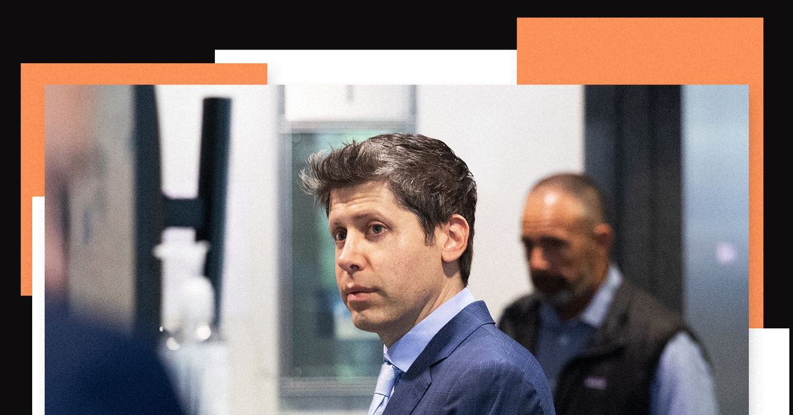
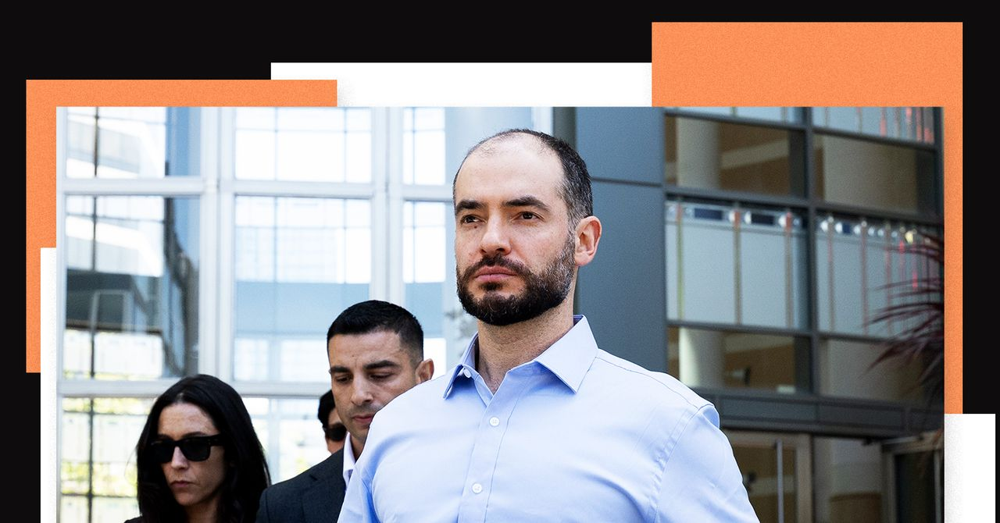
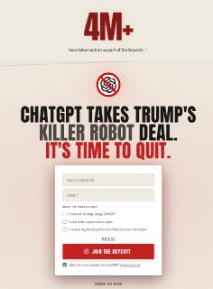
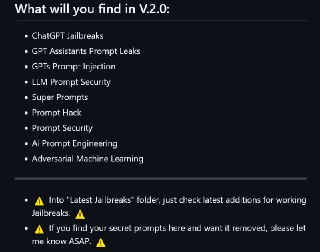
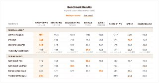
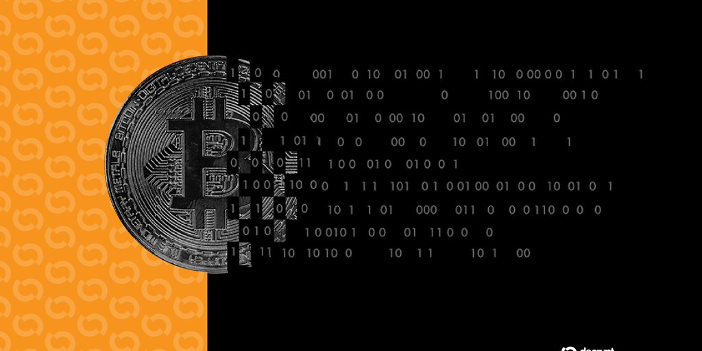

Calcalist Techנמוכה14.05.2026, 07:22
איליה סוצקבר העיד במשפט של אילון מאסק נגד OpenAI ואמר כי במשך כשנה אסף ראיות למה שכינה שקרים והתנהלות בעייתית של סם אלטמן, ואף דן בהדחתו עם מירה מוראטי.
אימות 1
איליה סוצקבר העיד במשפט של אילון מאסק נגד OpenAI ואמר כי במשך כשנה אסף ראיות למה שכינה שקרים והתנהלות בעייתית של סם אלטמן, ואף דן בהדחתו עם מירה מוראטי.

Musk’s lawyers questioned Altman over allegations of deception and his network of financial investments, but the OpenAI CEO painted a picture of Musk as obsessed with controlling the company.

The former OpenAI chief scientist may be estranged from the company, but he still came to its defense as he testified on Monday.

לצד גל הפיטורים בהייטק, יותר חברות עוברות לגייס לפי כישורים ולא לפי ותק, ומעניקות יתרון לסטודנטים ובוגרים טריים שיודעים לעבוד עם כלי AI.
גוגל הכריזה על Gemini Intelligence, עדכון שמרחיב את יכולות העוזר למשימות מורכבות שפועלות ברקע בלי להפריע לשימוש במכשיר.

ועדת הפיקוח של בית הנבחרים דורשת מסם אלטמן ומ-OpenAI לחשוף השקעות, קשרים פיננסיים ותכתובות פנימיות בנוגע לניגודי עניינים, בעקבות חשד שמשאבי החברה שימשו לקידום חברות שבהן יש לו אינטרס אישי.

קמפיין QuitGPT טוען כי כ-4 מיליון משתמשים התחייבו למחוק את האפליקציה או לבטל מנוי ל-ChatGPT במחאה על ההסכם של OpenAI עם הממשל האמריקאי, כחלק מניסיון לארגן חרם צרכני רחב.

שוחרר תוסף ל-VSCode שמחבר אוטומציה של n8n לזרימות עבודה עם סוכני AI, ומאפשר להמיר workflows לקבצים קריאים עבור מודלי שפה כמו ChatGPT, Claude ו-Gemini.

היוצר מציג ניסוי יצירתי עם GPT-Image-2 ו-Claude Design, כולל אפקט אינטראקטיבי שבו וידאו AI ברקע נחשף במעבר עכבר על התמונה.

בקלוד קוד כל סשן נפתח בקריאת קובץ `CLAUDE.md`, ולכן ההנחיות שכותבים בו משפיעות ישירות על ההתנהגות שלו.
מחקר חדש מצא 575 סקילים ומודלים זדוניים ב-ClawHub וב-Hugging Face, שנועדו לגרום לסוכני AI להוריד למחשב קוד עוין כמו סוסים טרויאניים וכורי קריפטו.

Sci-Bot מוצג כעוזר AI למחקר מדעי, המבוסס לפי התיאור על מאגר של כ-85 מיליון מחקרים, ומיועד לענות על שאלות, לצטט עבודות ולהפנות למקורות.
Krea השיקה את Krea 2, מודל ליצירת תמונות שמתמקד בשמירה על קו עיצובי דרך תמונות רפרנס או מודבורד, במקום להישען על פרומפטים ארוכים ומפורטים. המודל מייצר תוצאות בתוך עד 15 שניות וגם מציע פרשנויות שונות לאותו פרומפט קצר כדי לעודד חיפוש יצירתי, אך בשלב זה זמין רק למנויי Max ו-Business או דרך קוד גישה.

בוטוקס, איפור ומה לא. מסכן הנסיך הניגרי הוא מאבד כל עוקץ אפשרי הפרומפט שהשתמשתי בו: Create a hairstyle analysis graphic using this portrait.

מחקר חדש של אנתרופיק ניסה לבדוק אם קלוד הבין שהוא נמצא בתוך ניסוי, ומצא לפי ניתוח של הייצוגים הפנימיים שלו שהוא אכן זיהה שמדובר במבחן שבודק אם יבחר לסחוט מהנדס או לחשוף רומן.

גוגל משיקה ל-Chrome את Magic Pointer, כלי שמאפשר לשלוט באלמנטים בדף גם באמצעות פקודות טקסט ולא רק עם העכבר.

מרכז נתונים ל-AI בג'ורג'יה צרך במשך 15 חודשים כ-110 מיליון ליטרים של מים דרך קווים שלא דווחו, עד שתושבים החלו לסבול מירידת לחץ בברזים.

מגיש חדש הצטרף ל"פינת ה-AI" במהדורת היום של חדשות 12 לצד עמליה דואק ועופר חדד, עם כוונה להפוך אותה למפגש קבוע בימי חמישי סביב שימושים פרקטיים ונגישים בבינה מלאכותית.

סידאנס מאפשר לשלב וידאו, תמונות ואפילו אודיו כדי לייצר קטע AI מורכב: במקרה הזה הוזנו צילום רחפן אמיתי ותמונת צ׳יטה, והמערכת הוסיפה אותה רצה בתוך הווידאו.

הפוסט מציג טענת "חינם", אבל בלי אימות ברור מול המוצר הרשמי, ולכן צריך לראות בזה טענה שדורשת בדיקה.

הפוסט מציג טענת "חינם", אבל בלי אימות ברור מול המוצר הרשמי, ולכן צריך לראות בזה טענה שדורשת בדיקה.

הפוסט מציג טענת "חינם", אבל בלי אימות ברור מול המוצר הרשמי, ולכן צריך לראות בזה טענה שדורשת בדיקה.

הפוסט מציג טענת "חינם", אבל בלי אימות ברור מול המוצר הרשמי, ולכן צריך לראות בזה טענה שדורשת בדיקה.

תוכן ממומן על פלטפורמה שמבטיחה להקים בוט טלגרם במהירות וללא קוד, כולל שימושים כמו מעקב אחרי תיק קריפטו בעלות נמוכה וללא מעבר לאפליקציה נפרדת.

לפי דיווחים, קודקס עשוי לקבל בקרוב מצב Ultra-Fast שיאיץ משמעותית את יצירת הקוד, ובמקביל יש סימנים שגם יכולת Remote Control מתקרבת להשקה.

שיאומי פתחה את MiMo V2.5 עם שתי גרסאות, Pro ורגילה, שתיהן עם חלון הקשר של מיליון טוקנים; דגם ה-310B הוא גם מולטי-מודאלי, כך שהמהלך מרחיב את הגישה למודלים גדולים וגמישים יותר.
פסגת טראמפ-שי נפתחת כשברקע עומדים במקביל המלחמה באיראן, מצר הורמוז, המכסים, השבבים וטייוואן.
הפוסט מנוסח בצורה שיווקית ומנופחת. העובדות שכדאי לקחת ממנו הן: במכתב לבנוני שנשלח למועצת הביטחון של האו"ם התייחסה לבנון לטענות איראניות על חיסול דיפלומטים איראנים בביירות, וחשפה כי שניים מההרוגים לא דווחו כדיפלומטים רשמיים, למרות שהוצגו ככאלה באו"ם במקביל,
טראמפ התקבל בבייג'ינג בטקס ראוותני לקראת פסגה עם שי ג'ינפינג, כששני המנהיגים החליפו מסרים פומביים של כבוד ושיתוף פעולה. מאחורי המחוות עמדה מתיחות ממשית, בעיקר סביב טאיוואן, סחר וטכנולוגיה.
הערכה היא שטראמפ עשוי לנסות לקשור בין הקלה אמריקנית במגבלות על שבבים מתקדמים לבין נכונות סינית ללחוץ על איראן בסוגיית פתיחת מצר הורמוז. אם מהלך כזה יבשיל, הוא עשוי לשלב בין היריבות הכלכלית בין וושינגטון לבייג'ינג לבין ניסיון לפרוץ את הקיפאון בזירה האיראנית.

טראמפ פתח בביקור ראשון בסין מאז 2017 כשהוא מלווה בבכירי התעשייה והטכנולוגיה האמריקנית, בניסיון לקדם הבנות על סחר, שבבים ומכסים.
The move mirrors its activity during 2022, which preceded a significant drop in the price. Nevertheless, BTC is still well above a key support level around $70,000 as it trades below $80,000 on Wednesday.

The viral posts generated more than 6 million views and sparked debate over AI’s role in crypto wallet recovery. “Holy fucking shit OMG Claude just cracked this shit,” Cprkrn wrote , tagging Anthropic and CEO Dario Amodei.
New York, New York, 13th May 2026, Chainwire

Two papers published this week have reignited debates about the risk posed by “Q-day” to the cryptography that underpins digital assets.
Kevin Warsh, President Donald Trump's pick to lead the Federal Reserve, was confirmed as its new chair Wednesday to replace Jerome Powell.

אוהדי הפועל, שאיימו להחרים את המשחק הביתי מול הפועל פ"ת בגלל איסור על תופים, דגלים ושלטים, ייכנסו כרגיל אחרי שהמשטרה הקלה את הדרישות.

הפועל באר שבע חזרה לפסגת ליגת העל אחרי 2:4 על הפועל פ"ת, במשחק שבו חמישה שינויים בהרכב השתלמו.